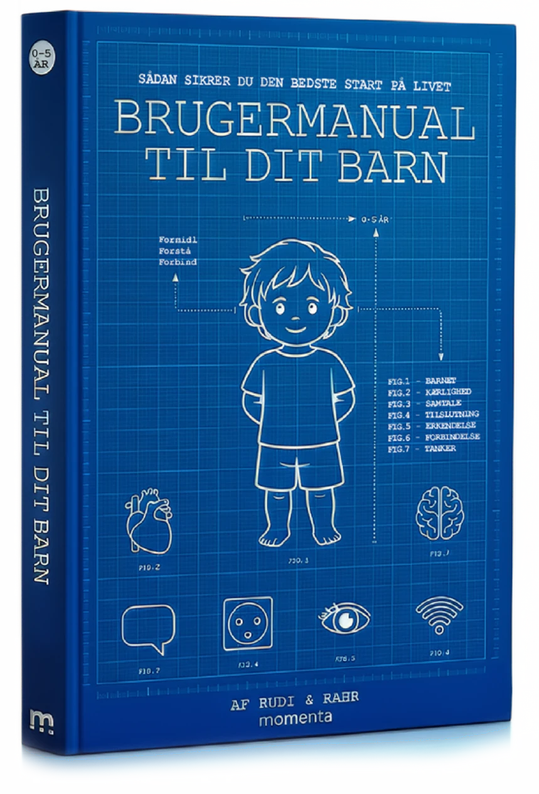
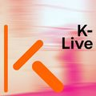
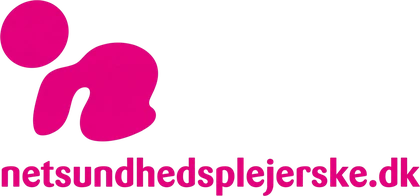
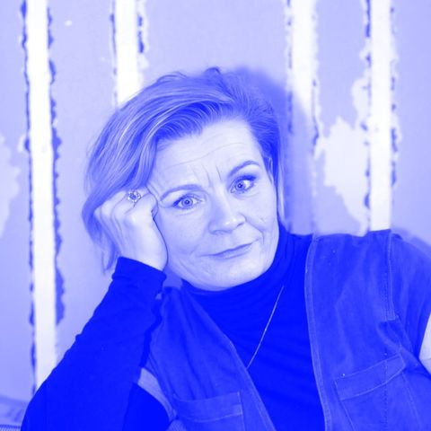
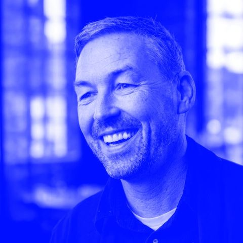
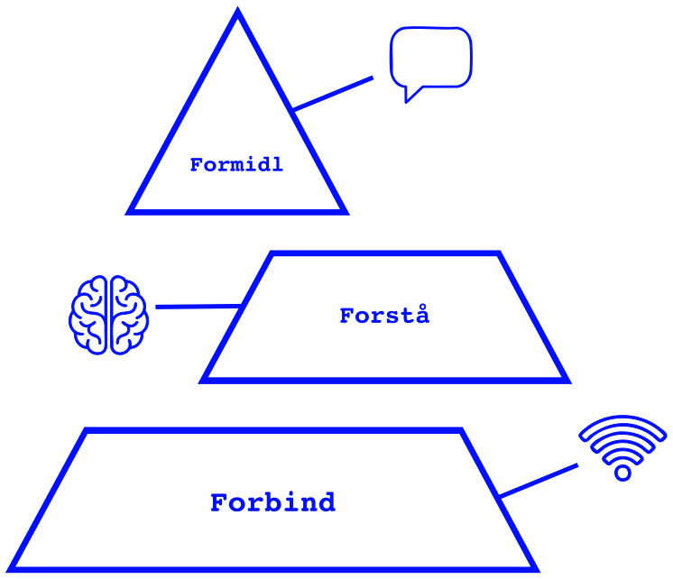

Lær at …
Forstå hvorfor perfektion er en systemfejl.
Fejl er fantastiske og giver dig uundværlig input.
01 / 09
En ny brugerflade til et bedre forældreskab

“Idéen om at gøre psykologisk viden mere forståelig og anvendelig i hverdagen er både vigtig, sjov og original.”
“Manualen er sjov, varm og indsigtsfuld, den oversætter børnepsykologi til noget, jeg som far til en treårig med store følelser faktisk forstår og kan bruge. Og så er den enormt brugervenlig.”
“Et tiltrængt og mere intuitivt sprog til forbindelsen mellem børn og voksne, både i hverdagens gyldne øjeblikke og svære stunder.”
Teis Jeppe Gørtz om manualen, der oversætter forældreskabets vigtigste opgave til et sprog, forældre allerede taler.
Psykoterapeut Dorte Rudi Andersen om forældres klassiske fælde — og de tre trin, hun selv bruger til hverdagens konflikter.

Om at bruge computersprog til at forstå børneopdragelse — og hvad det sprog siger om vores syn på børn.
Om hvordan opdragelsesråd har ændret sig gennem generationer — fra Anna Wahlgren og Jesper Juul til i dag.

BOGGUIDEBogguiden om manualen, der gør udviklingspsykologi og viden om hjernen konkret og genkendelig med billeder fra teknologiens verden.
Fejl er fantastiske og giver dig uundværlig input.
Få øje på, hvad der kan ligge bag gråd, vrede, modstand og nedsmeltninger.
Forstå, hvordan barnets udvikling, følelser og nervesystem påvirker dets adfærd.
Lær om sammenhængen mellem barnets udvikling, følelsesmæssige tilstande og evne til at samarbejde.
Se, hvordan jeres følelsesmæssige tilstande påvirker hinanden, og hvorfor din egen ro kan gøre en forskel.
Brug din viden om barnets udvikling og følelsesmæssige behov til at finde en vej gennem hverdagens konflikter.
Forstå betydningen af at genstarte forbindelsen efter konflikter og finde tilbage til hinanden.
Flyt opmærksomheden fra spørgsmålet »Hvad skal jeg gøre?« til »Hvad sker der mellem os?«
Videnskaben om dit barn, oversat til handling i virkeligheden.
Absolut ingen nye psykologiske teorier eller videnskabelige gennembrud.
Vi har skabt en ny intuitiv brugerflade, der bygger bro mellem videnskaben og hverdagen.
Manualen er baseret på etableret forskning inden for:
Udfordringen i dag er ikke mangel på viden. Det er adgang til den, når vi har brug for den.
Ikke endnu en teori. Et opslagsværk, du kan bruge midt i hverdagen — også når dit eget system er tæt på overophedning.
21 fejlkoder, du kan slå op i, når systemet hakker. Find den rigtige på tre måder: hvad du ser lige nu, hvornår på dagen, eller hvad du vil forstå.
Forbind. Forstå. Formidl. Den samme rækkefølge hver gang, så du ikke skal tænke, når du har mindst overskud.
Konkrete formuleringer til situationen — fx: “Det er helt ok bare at sidde stille et øjeblik. Jeg sidder her også bare lidt.”
Hver kode er delt op i 0–2 år og 2–5 år, så støtten passer til barnets udvikling. Brug alder som en retning, ikke en forventning.
Esc-tasten, en kort statustjek-version til her-og-nu og dobbeltindånding: en hurtig fysiologisk genstart, når pulsen stiger.
Et sprog, der gør psykologi lettere at huske og lettere at tale om uden skyld. Et fejlkompetent styresystem opstår ikke i fraværet af fejl, men gennem gentagne, succesfulde genstarter.
Hver kode er bygget ens, så du hurtigt kan finde rundt — også midt i en presset situation. Følg altid sekvensen: Forbind. Forstå. Formidl.
Barnet bliver mere stille. Du forsøger at få kontakt, men får ingen respons. Barnet stirrer tomt ud i luften eller direkte igennem dig.
Systemet er aktivt, men har lukket for direkte kontakt. Ved øget pres lukker systemet yderligere ned for adgang.
Sænk din signalstyrke. Vær fysisk tilgængelig uden krav om respons. Hvis muligt, så læg en hånd på ryggen af barnet.
Læs tavsheden som en lydløs alarm. “Det er helt ok bare at sidde stille et øjeblik. Jeg sidder her også bare lidt.”
Vent på, at barnet sender signal om, at det er klar: et blik, en finger, der rører din arm. Svar med lav intensitet.
Pjevsethed og irritabilitet uden tydelig årsag.
Siger konsekvent nej til alt — selv det, barnet plejer at elske.
Slår, bider, kaster ting, råber — trykket går ud gennem kroppen.
Bliver mere aktivt, hopper mellem aktiviteter, larmer og afbryder.
Bliver mere stille og stirrer tomt — du får ingen respons.
Utrøstelig gråd og nedsmeltning — afviser hjælp.
Modstand, når du beder det skifte fra leg til tøj eller fra bad til mad.
Sidder fast i gentagelser — samme leg, samme ønske, igen og igen.
Bliver krævende og ustabilt — præcis når du er mest presset.
Reagerer kraftigt, når du hjælper en søskende.
Opfører sig anderledes i supermarkedet, til fødselsdag eller ved hentning.
Du trøster, barnet skubber dig væk — din ro bliver en blokering.
Stærk modstand mod afbrydelser og pludselige følelsesudladninger.
Alt larmer — barnet skruer op for sine egne fejlkoder for at finde dig.
Maser sig fysisk tæt på, afbryder eller tager dine ting.
Klamrer sig til din krop, græder ved døren eller stivner i garderoben.
Råber “MIN”, trækker legetøjet til sig eller skubber andre væk.
Falder ikke til ro ved sengetid — løber rundt, griner, græder, når lyset slukkes.
Tester den samme grænse igen og igen: “Bare to minutter mere.”
Virker meget nemt og føjeligt — men sender færre signaler end før.
Reaktioner, der virker ude af proportion med situationen.
F00 og F20.0.20 er ikke fejlkoder i egentlig forstand — de er grundvilkår og perspektiver. De øvrige 19 er konkrete situationer, du kan slå op i, når systemet hakker.
Vores børn kom uden manual.
Derfor har vi skrevet én.

Dorte Rudi AndersenPsykoterapeut · Cand.mag. · 25+ års erfaring · Børns udvikling
Niels RahrKreativ strateg · Kommunikation · Teknologi · PrisvindendeOplev Brugermanual til dit barn fra scenen — fra forfatterne selv.
Skriv til Dorte og Niels med jeres anledning og målgruppe — så finder vi formatet sammen.

Viden hjælper først for alvor, når den kan bruges uden at lede efter den.
Nej. Teknologisproget er et pædagogisk interface og et voksenværktøj — en måde at gøre kompleks viden lettere at huske og bruge, ikke en påstand om, at børn fungerer som maskiner.
Manualen bygger på eksisterende forskning og faglig viden inden for psykologi, tilknytning og udvikling. Innovationen ligger i oversættelsen og brugerfladen — ikke i nye videnskabelige påstande.
0 til 5 år.
Gennem brugerfladen: et fælles sprog, tre klare protokoller (Forbind, Forstå, Formidl) og et design, der er lavet til at bruges midt i hverdagen — ikke kun læses i ro.
Nej — og det er meget bevidst pointen. Perfektion er en systemfejl. Manualen handler om familiekode, fejl som input og evnen til at reparere, ikke om at undgå fejl.
Nej. Manualen er generel formidling og erstatter ikke individuel faglig vurdering, rådgivning eller behandling.
Pressemateriale, interviews og samarbejdsforespørgsler koordineres direkte med forfatterne og Forlaget Momenta. Skriv til Dorte og Niels, så vender vi tilbage med det, du har brug for.
Vi har altid brugt det, vi byggede, til at forstå os selv — og sproget bestemmer, hvad vi kan se og gøre. Når vi ændrer sproget, ændrer vi blikket. Når vi ændrer blikket, ændrer vi reaktionen. Når vi ændrer reaktionen, ændrer vi forbindelsen. Teknologisk er et metaforisk, operationelt sprog, der bruger velkendte systembegreber til at gøre psykologisk og biologisk viden lettere at genkende og bruge. Ordene er mentale modeller, ikke biologiske definitioner. Klik på et begreb.
Manualen ser ikke børn som maskiner. Sproget er et voksenværktøj — en brugerflade til viden, vi allerede har.
Sjælen beskrevet som en stridsvogn med to heste — et tidligt billede på indre kræfter, der skal styres i samme retning.
Kroppen forstået gennem datidens mekanik — rør, ventiler og bevægelse som model for det biologiske.
Skabte nye danske ord for naturvidenskaben, så den kunne tales om uden latin — adgang frem for opfindelse.
Det levende ord og sproget mellem mennesker som forudsætning for oplysning, ikke kun det skrevne.
Beregning blev formaliseret — grundlaget for det digitale sprog, vi i dag taler flydende.
Hardware. Software. Netværk. Signal. Feedback. Forbindelse. Ord, en hel generation af forældre allerede taler.
Teknologiens nutidige sprog bruges som metaforisk interface til eksisterende viden om mennesket — ikke som ny teori.
Brugermanual til dit barn gør vigtig viden lettere at få fra reolen og ind på rygraden. 0-5 år · Dorte Rudi Andersen & Niels Rahr.